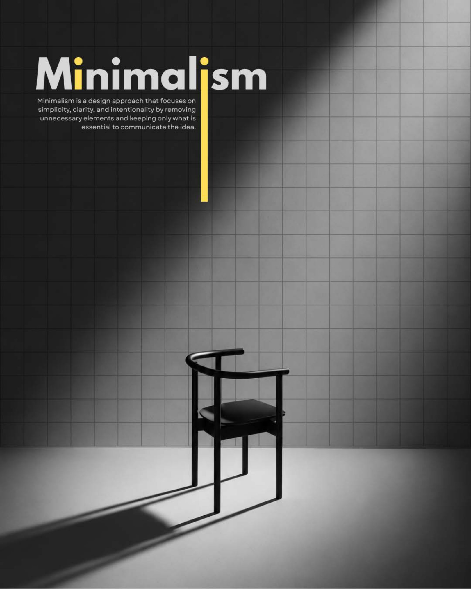
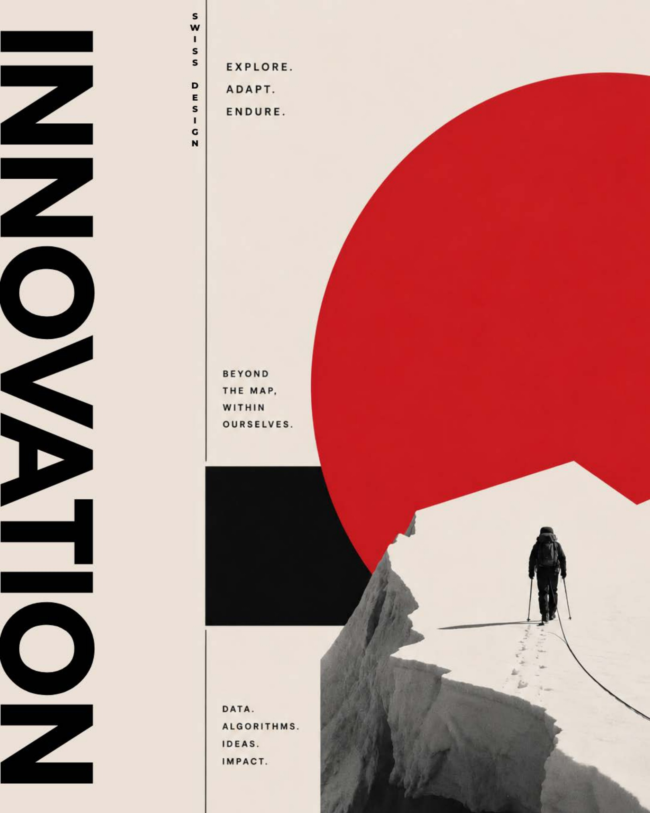
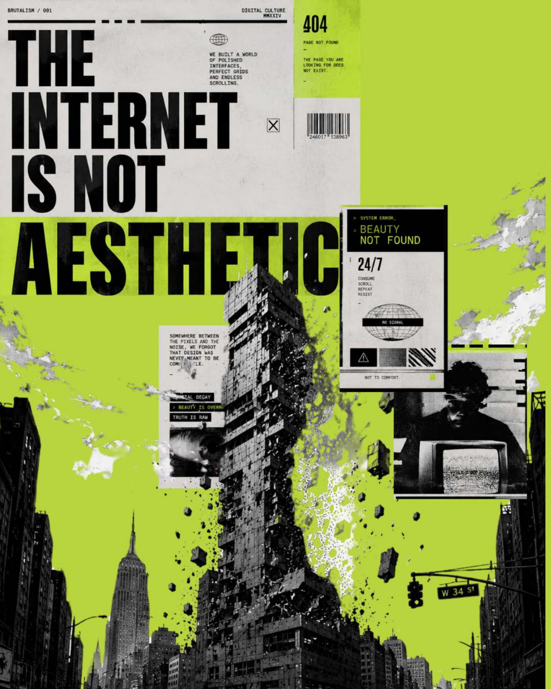
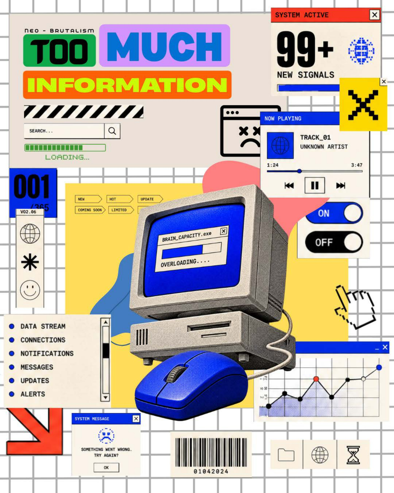
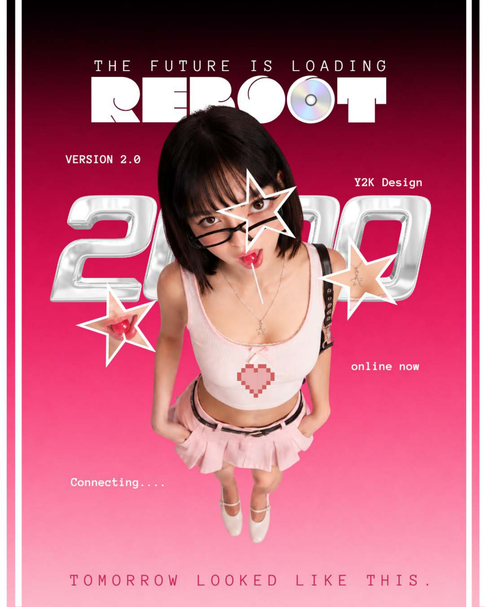
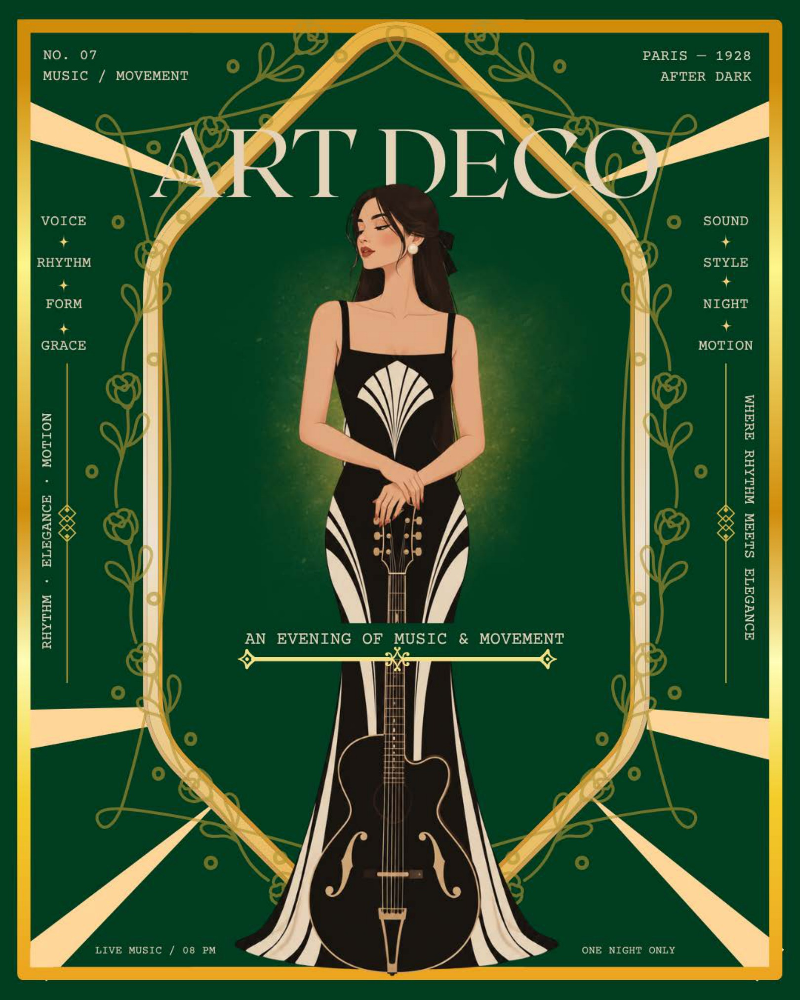
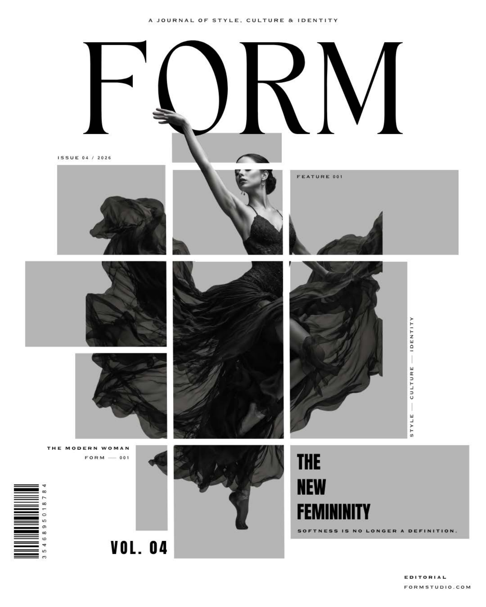
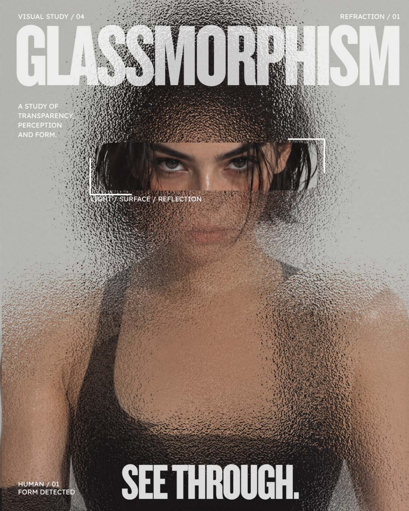
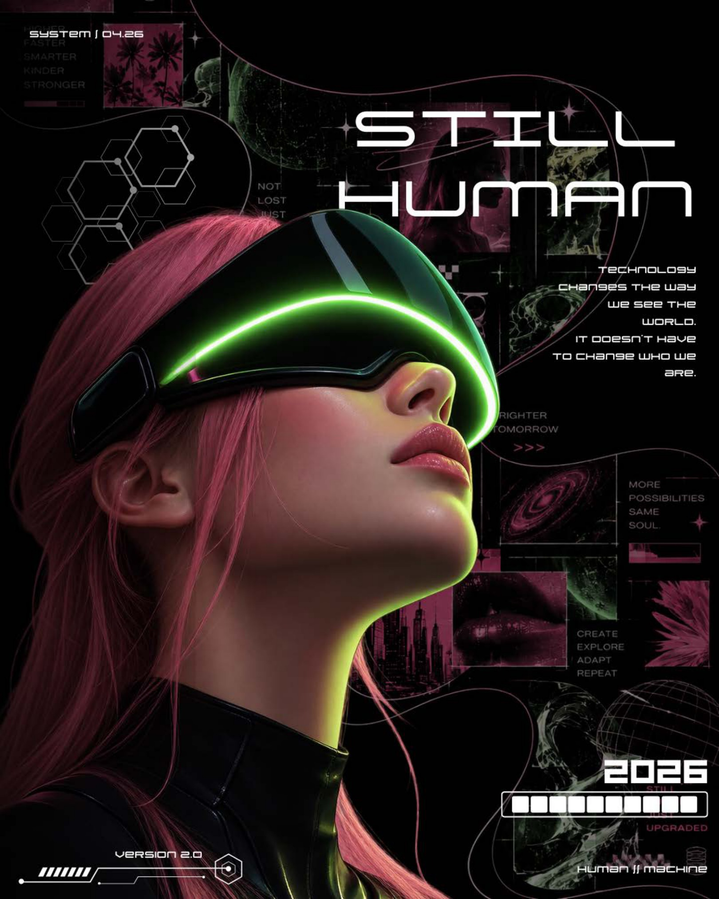
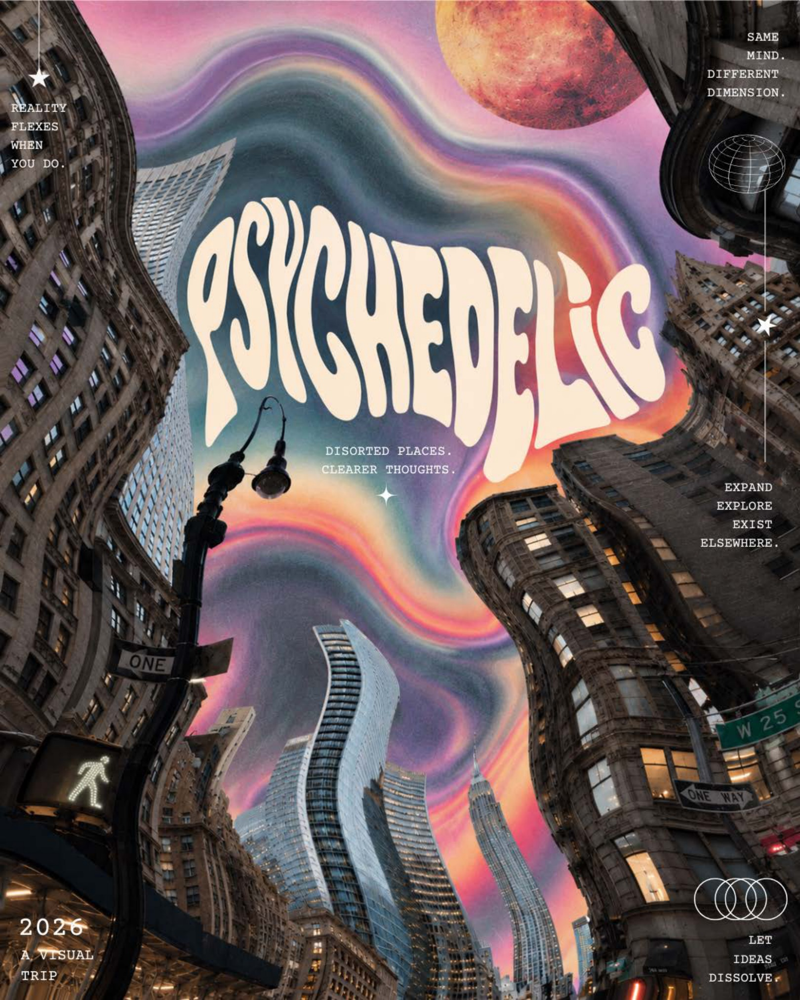

04
EXPERIMENTAL DESIGNS
A VISUAL STUDY EXPLORING DIFFERENT DESIGN LANGUAGES, COMPOSITIONS AND AESTHETICS
Self-Initiated Work · Aesthetic Adaptability · 10 Curated Explorations · Typographic Systems
CURATORIAL PREMISE
“This collection explores how visual systems can shift across different contexts, styles and moods — demonstrating adaptability rather than one fixed design language.”
01
SPATIAL RESTRAINT // ESSENTIAL FORMS
MINIMALISM

02
GRID DISCIPLINE // OBJECTIVE ORDER
SWISS DESIGN

03
RAW CONTRAST // STRUCTURAL DISRUPTION
BRUTALISM

04
DIGITAL BLOCKS // HIGH-ENERGY CONTRAST
NEO-BRUTALISM

05
CYBER NOSTALGIA // CHROME TYPEFORMS
Y2K AESTHETICS

06
GEOMETRIC SYMMETRY // ORNAMENTAL LUXURY
ART DECO

07
ART DIRECTION // NARRATIVE PACING
EDITORIAL DESIGN

08
OPTICAL TRANSLUCENCY // LAYERED DEPTH
GLASSMORPHISM

09
INTERFACE MODULARITY // TECH WORLDBUILDING
FUTURISTIC & SPECULATIVE DESIGN

10
ORGANIC WARPING // EXPRESSIVE CHROMATICS
PSYCHEDELIC DESIGN

“Different briefs demand different visual languages. This collection is an exploration of how far that language can shift.”
From rigorous Swiss grids and stark minimalism to expressive psychedelia and speculative UI, this archive stands as a testament to stylistic versatility, visual curiosity, and execution precision across diverse creative challenges.